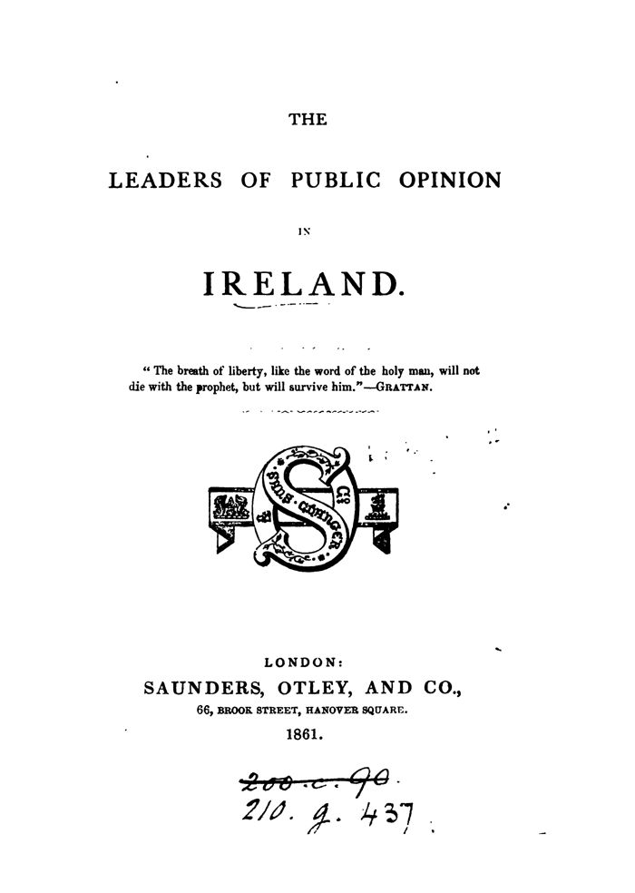

The anonymous title page (1861)
London 1861, title page, scan n5; contents n7 (the O’Connell and “Clerical Influences” entries read at preview size only).

Further down the rabbit hole
Sources that Lecky cites in the notes next to the ones that cite this page.
- Buckle, History of Civilization in EnglandWeather and credulity, and the Scottish clergy’s Devil who had been studying for five thousand years
- Clogy, Memoir of Bishop BedellA Protestant bishop, held by Catholic rebels, keeps Gunpowder Day
- Rogers, RecollectionsCharles James Fox at table: “The only foundation for toleration is a degree of scepticism”
- Aquinas, Summa theologiae, II-IIHeretics and forgers; the usurper’s subjects
- Bayle, Commentaire philosophiqueBayle answers the Mosaic law objection to toleration
- Simancas, De Catholicis InstitutionibusAn inquisitor’s handbook: no faith with heretics, and torture


Backlinks
Every place in Rationalism in Europe that links to this page (generated automatically when the site is built).
- Chapter IV, Part II: note 4